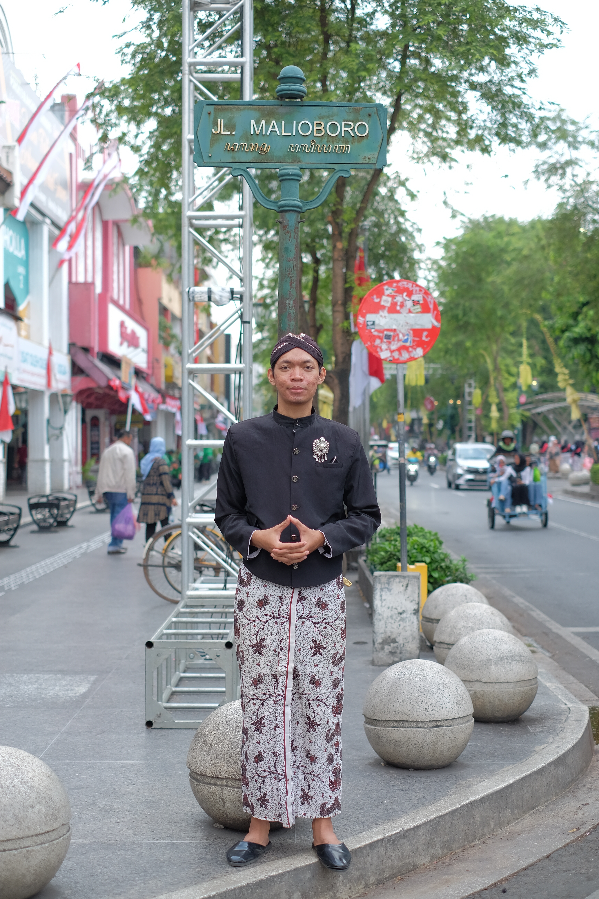
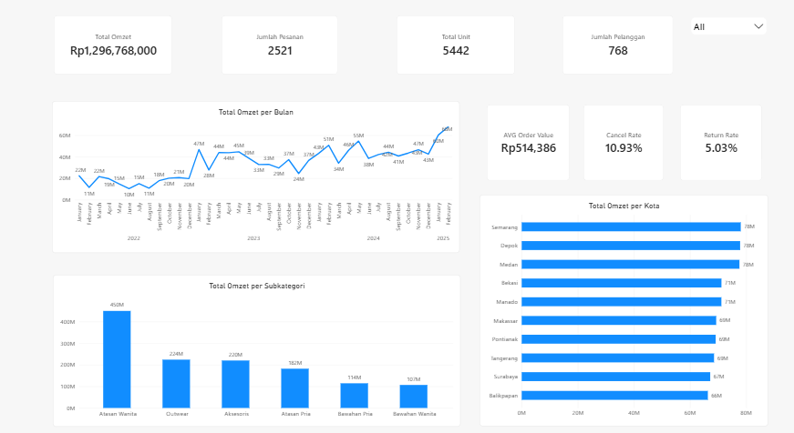
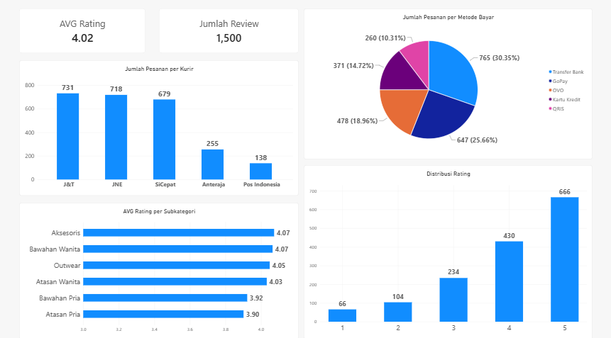
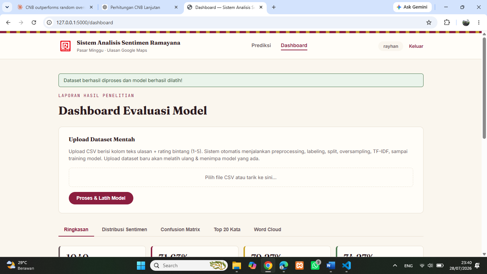
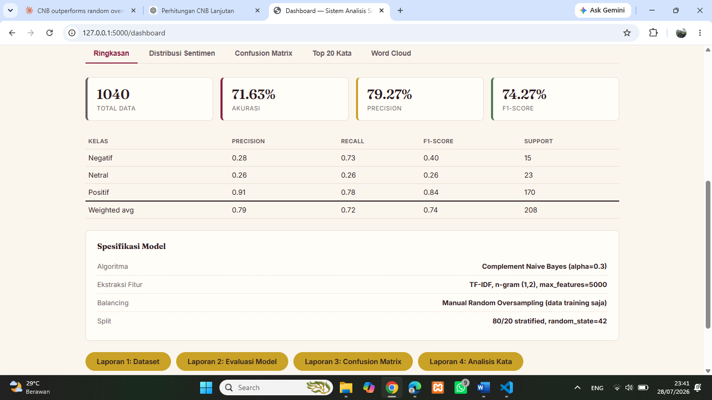
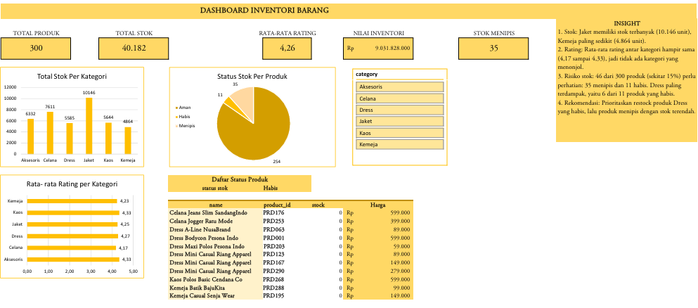
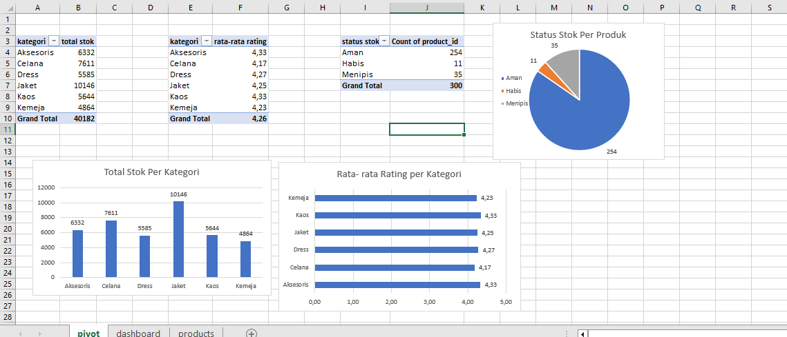

Muhamad Rayhan
Data Analyst / S.Kom
Halo, Saya Muhamad Rayhan
Data Analyst | SQL Querying | Power BI & Excel Dashboards | Python
Lulusan S.Kom Teknik Informatika yang berfokus menerjemahkan dataset mentah menjadi insight bisnis yang bernilai melalui pembersihan data terstruktur, pemodelan data, serta pembuatan dashboard visual interaktif.
Proyek Analisis Data
Studi kasus riil yang memadukan pembersihan data, eksplorasi, visualisasi dashboard, dan rekomendasi bisnis.


Tangkapan Layar Dashboard Power BI
Sales & Customer Satisfaction Dashboard - Gayanara
Merancang model data terstruktur dan dashboard interaktif Power BI untuk menganalisis tren omzet penjualan toko *fashion* periode Jan 2022 - Feb 2025.
CALCULATE & KEEPFILTERS untuk kalkulasi metrik bisnis presisi.


Tangkapan Layar Web Flask & Sentimen
Analisis Sentimen Google Maps dengan Naive Bayes (Tugas Akhir)
Penelitian analisis kepuasan pelanggan ritel Ramayana Pasar Minggu berbasis ulasan Google Maps menggunakan teknik Machine Learning dan aplikasi web interaktif.


Tangkapan Layar Dashboard Excel & KPI
Dashboard Inventori Produk & KPI Stok (Excel)
Pengolahan data stok produk pakaian secara komprehensif di Microsoft Excel untuk memantau kesehatan inventori dan mempercepat pengambilan keputusan logistik.
Keahlian Teknis & Tools
- MySQL / Relational DB Tingkat Lanjut
- DuckDB Dasar/Praktik
- Data Cleaning & Joins Menguasai
- Aggregate & String Functions Menguasai
- Microsoft Excel Pivot, Slicer, Chart
- Power BI DAX, Power Query
- KPI Dashboard Menguasai
- Interactive Reports Menguasai
- Python NLP, Data Preprocessing
- Flask Framework Web App Dasar
- Java (NetBeans) Dasar Pengembang
- Command Line / Git Terbiasa
- Sentiment Analysis Naive Bayes
- Analytical Thinking Tinggi
- Troubleshooting & Networking Latar Belakang TKJ
- Bahasa Indonesia & Inggris Native / Inter.
Pengalaman Kerja
Application Developer (Magang)
PT Toyosindo | Jakarta
-
Mengembangkan aplikasi pengelolaan data karyawan berbasis dekstop menggunakan Java (NetBeans).
Mengelola dan menyimpan struktur data karyawan secara aman menggunakan basis data relational MySQL.
Melakukan pengujian rutin sistem (testing) dan perbaikan bug/error untuk memastikan efisiensi alur kerja pengolahan data.
IT Network Support (Praktik Kerja Lapangan)
PT Indonesia Comnets Plus (ICON+) | Jakarta Selatan
-
Memantau kestabilan jaringan perusahaan serta mendokumentasikan topologi jaringan dan alokasi IP address secara rapi.
Mengonfigurasi router dan switch MikroTik (IP address, subnetting, VLAN) untuk kebutuhan operasional.
Melakukan perawatan, instalasi kabel LAN, dan troubleshooting jaringan komputer perusahaan.
Pendidikan
Universitas Indraprasta PGRI (UNINDRA)
2022 – 2026S.Kom, Teknik Informatika | IPK 3,34 / 4,00
Fokus pada pemrograman, logika komputasi, dan analisis data (Tugas Akhir Machine Learning).
SMK Cyber Media
2019 – 2022Teknik Komputer Jaringan (TKJ)
Memberikan fondasi pemahaman hardware, sistem operasi, dan troubleshooting logika.
Sertifikat & Pelatihan
SQL 101 – NgulikData (2026)
Memperoleh Lencana Resmi "Tamat: SQL 101"
Praktik penulisan kueri SQL, pengolahan database relational, dan analisis dataset dengan DuckDB.
Portofolio XL-Test (Excel) – belajarexcel.id (2026)
Sertifikasi Praktik Pengolahan Excel
Pengujian pemahaman fungsi tingkat lanjut, pembersihan data, serta pembentukan laporan visual Excel.